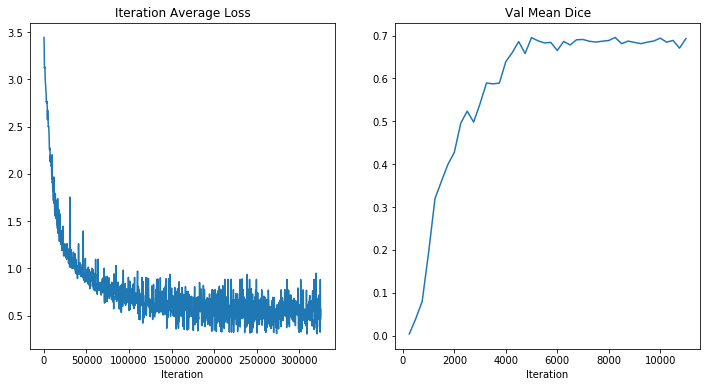
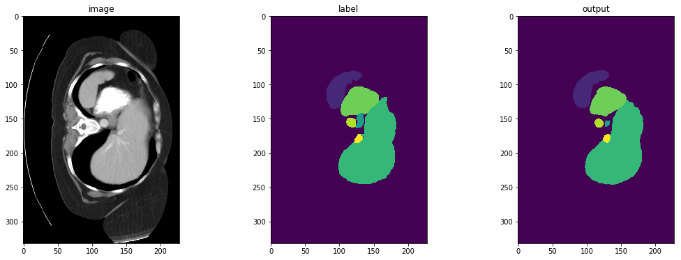

!python -c "import monai" || pip install -q "monai-weekly[nibabel, einops]"
!pip install -q pytorch-lightning~=2.0
!python -c "import matplotlib" || pip install -q matplotlib3D Multi-organ Segmentation with UNETR (BTCV Challenge)
Setup environment
Setup imports
import os
import shutil
import tempfile
import matplotlib.pyplot as plt
from monai.losses import DiceCELoss
from monai.inferers import sliding_window_inference
from monai.transforms import (
AsDiscrete,
EnsureChannelFirstd,
Compose,
CropForegroundd,
LoadImaged,
Orientationd,
RandFlipd,
RandCropByPosNegLabeld,
RandShiftIntensityd,
ScaleIntensityRanged,
Spacingd,
RandRotate90d,
)
from monai.config import print_config
from monai.metrics import DiceMetric
from monai.networks.nets import UNETR
from monai.data import (
DataLoader,
CacheDataset,
load_decathlon_datalist,
decollate_batch,
list_data_collate,
)
import torch
import pytorch_lightning
from pytorch_lightning.callbacks.model_checkpoint import ModelCheckpoint
os.environ["CUDA_DEVICE_ORDER"] = "PCI_BUS_ID"
device = torch.device("cuda" if torch.cuda.is_available() else "cpu")
torch.backends.cudnn.benchmark = True
print_config()MONAI version: 0.9.1
Numpy version: 1.22.4
Pytorch version: 1.13.0a0+340c412
MONAI flags: HAS_EXT = True, USE_COMPILED = False, USE_META_DICT = False
MONAI rev id: 356d2d2f41b473f588899d705bbc682308cee52c
MONAI __file__: /opt/monai/monai/__init__.py
Optional dependencies:
Pytorch Ignite version: 0.4.9
Nibabel version: 4.0.1
scikit-image version: 0.19.3
Pillow version: 9.0.1
Tensorboard version: 2.9.1
gdown version: 4.5.1
TorchVision version: 0.13.0a0
tqdm version: 4.64.0
lmdb version: 1.3.0
psutil version: 5.9.1
pandas version: 1.3.5
einops version: 0.4.1
transformers version: 4.20.1
mlflow version: 1.27.0
pynrrd version: 0.4.3
For details about installing the optional dependencies, please visit:
https://docs.monai.io/en/latest/installation.html#installing-the-recommended-dependencies
Setup data directory
You can specify a directory with the MONAI_DATA_DIRECTORY environment variable.
This allows you to save results and reuse downloads.
If not specified a temporary directory will be used.
directory = os.environ.get("MONAI_DATA_DIRECTORY")
if directory is not None:
os.makedirs(directory, exist_ok=True)
root_dir = tempfile.mkdtemp() if directory is None else directory
print(root_dir)/tmp/tmpmqlv_tg7Download dataset and format in the folder.
1. Download dataset from here: https://www.synapse.org/#!Synapse:syn3193805/wiki/89480\n
2. Put images in the ./data/imagesTr
3. Put labels in the ./data/labelsTr
4. make JSON file accordingly: ./data/dataset_0.json
Example of JSON file:
{
"description": "btcv yucheng",
"labels": {
"0": "background",
"1": "spleen",
"2": "rkid",
"3": "lkid",
"4": "gall",
"5": "eso",
"6": "liver",
"7": "sto",
"8": "aorta",
"9": "IVC",
"10": "veins",
"11": "pancreas",
"12": "rad",
"13": "lad"
},
"licence": "yt",
"modality": {
"0": "CT"
},
"name": "btcv",
"numTest": 20,
"numTraining": 80,
"reference": "Vanderbilt University",
"release": "1.0 06/08/2015",
"tensorImageSize": "3D",
"test": [
"imagesTs/img0061.nii.gz",
"imagesTs/img0062.nii.gz",
"imagesTs/img0063.nii.gz",
"imagesTs/img0064.nii.gz",
"imagesTs/img0065.nii.gz",
"imagesTs/img0066.nii.gz",
"imagesTs/img0067.nii.gz",
"imagesTs/img0068.nii.gz",
"imagesTs/img0069.nii.gz",
"imagesTs/img0070.nii.gz",
"imagesTs/img0071.nii.gz",
"imagesTs/img0072.nii.gz",
"imagesTs/img0073.nii.gz",
"imagesTs/img0074.nii.gz",
"imagesTs/img0075.nii.gz",
"imagesTs/img0076.nii.gz",
"imagesTs/img0077.nii.gz",
"imagesTs/img0078.nii.gz",
"imagesTs/img0079.nii.gz",
"imagesTs/img0080.nii.gz"
],
"training": [
{
"image": "imagesTr/img0001.nii.gz",
"label": "labelsTr/label0001.nii.gz"
},
{
"image": "imagesTr/img0002.nii.gz",
"label": "labelsTr/label0002.nii.gz"
},
{
"image": "imagesTr/img0003.nii.gz",
"label": "labelsTr/label0003.nii.gz"
},
{
"image": "imagesTr/img0004.nii.gz",
"label": "labelsTr/label0004.nii.gz"
},
{
"image": "imagesTr/img0005.nii.gz",
"label": "labelsTr/label0005.nii.gz"
},
{
"image": "imagesTr/img0006.nii.gz",
"label": "labelsTr/label0006.nii.gz"
},
{
"image": "imagesTr/img0007.nii.gz",
"label": "labelsTr/label0007.nii.gz"
},
{
"image": "imagesTr/img0008.nii.gz",
"label": "labelsTr/label0008.nii.gz"
},
{
"image": "imagesTr/img0009.nii.gz",
"label": "labelsTr/label0009.nii.gz"
},
{
"image": "imagesTr/img0010.nii.gz",
"label": "labelsTr/label0010.nii.gz"
},
{
"image": "imagesTr/img0021.nii.gz",
"label": "labelsTr/label0021.nii.gz"
},
{
"image": "imagesTr/img0022.nii.gz",
"label": "labelsTr/label0022.nii.gz"
},
{
"image": "imagesTr/img0023.nii.gz",
"label": "labelsTr/label0023.nii.gz"
},
{
"image": "imagesTr/img0024.nii.gz",
"label": "labelsTr/label0024.nii.gz"
},
{
"image": "imagesTr/img0025.nii.gz",
"label": "labelsTr/label0025.nii.gz"
},
{
"image": "imagesTr/img0026.nii.gz",
"label": "labelsTr/label0026.nii.gz"
},
{
"image": "imagesTr/img0027.nii.gz",
"label": "labelsTr/label0027.nii.gz"
},
{
"image": "imagesTr/img0028.nii.gz",
"label": "labelsTr/label0028.nii.gz"
},
{
"image": "imagesTr/img0029.nii.gz",
"label": "labelsTr/label0029.nii.gz"
},
{
"image": "imagesTr/img0030.nii.gz",
"label": "labelsTr/label0030.nii.gz"
},
{
"image": "imagesTr/img0031.nii.gz",
"label": "labelsTr/label0031.nii.gz"
},
{
"image": "imagesTr/img0032.nii.gz",
"label": "labelsTr/label0032.nii.gz"
},
{
"image": "imagesTr/img0033.nii.gz",
"label": "labelsTr/label0033.nii.gz"
},
{
"image": "imagesTr/img0034.nii.gz",
"label": "labelsTr/label0034.nii.gz"
}
],
"validation": [
{
"image": "imagesTr/img0035.nii.gz",
"label": "labelsTr/label0035.nii.gz"
},
{
"image": "imagesTr/img0036.nii.gz",
"label": "labelsTr/label0036.nii.gz"
},
{
"image": "imagesTr/img0037.nii.gz",
"label": "labelsTr/label0037.nii.gz"
},
{
"image": "imagesTr/img0038.nii.gz",
"label": "labelsTr/label0038.nii.gz"
},
{
"image": "imagesTr/img0039.nii.gz",
"label": "labelsTr/label0039.nii.gz"
},
{
"image": "imagesTr/img0040.nii.gz",
"label": "labelsTr/label0040.nii.gz"
}
]}
Define the LightningModule (transform, network)
The LightningModule contains a refactoring of your training code. The following module is a refactoring of the code in spleen_segmentation_3d.ipynb:
class Net(pytorch_lightning.LightningModule):
def __init__(self):
super().__init__()
self._model = UNETR(
in_channels=1,
out_channels=14,
img_size=(96, 96, 96),
feature_size=16,
hidden_size=768,
mlp_dim=3072,
num_heads=12,
proj_type="perceptron",
norm_name="instance",
res_block=True,
conv_block=True,
dropout_rate=0.0,
).to(device)
self.loss_function = DiceCELoss(to_onehot_y=True, softmax=True)
self.post_pred = AsDiscrete(argmax=True, to_onehot=14)
self.post_label = AsDiscrete(to_onehot=14)
self.dice_metric = DiceMetric(include_background=False, reduction="mean", get_not_nans=False)
self.best_val_dice = 0
self.best_val_epoch = 0
self.max_epochs = 1300
self.check_val = 30
self.warmup_epochs = 20
self.metric_values = []
self.epoch_loss_values = []
self.validation_step_outputs = []
def forward(self, x):
return self._model(x)
def prepare_data(self):
# prepare data
data_dir = "/dataset/dataset0/"
split_json = "dataset_0.json"
datasets = data_dir + split_json
datalist = load_decathlon_datalist(datasets, True, "training")
val_files = load_decathlon_datalist(datasets, True, "validation")
train_transforms = Compose(
[
LoadImaged(keys=["image", "label"]),
EnsureChannelFirstd(keys=["image", "label"]),
ScaleIntensityRanged(
keys=["image"],
a_min=-175,
a_max=250,
b_min=0.0,
b_max=1.0,
clip=True,
),
CropForegroundd(keys=["image", "label"], source_key="image", allow_smaller=True),
Orientationd(keys=["image", "label"], axcodes="RAS"),
Spacingd(
keys=["image", "label"],
pixdim=(1.5, 1.5, 2.0),
mode=("bilinear", "nearest"),
),
RandCropByPosNegLabeld(
keys=["image", "label"],
label_key="label",
spatial_size=(96, 96, 96),
pos=1,
neg=1,
num_samples=4,
image_key="image",
image_threshold=0,
),
RandFlipd(
keys=["image", "label"],
spatial_axis=[0],
prob=0.10,
),
RandFlipd(
keys=["image", "label"],
spatial_axis=[1],
prob=0.10,
),
RandFlipd(
keys=["image", "label"],
spatial_axis=[2],
prob=0.10,
),
RandRotate90d(
keys=["image", "label"],
prob=0.10,
max_k=3,
),
RandShiftIntensityd(
keys=["image"],
offsets=0.10,
prob=0.50,
),
]
)
val_transforms = Compose(
[
LoadImaged(keys=["image", "label"]),
EnsureChannelFirstd(keys=["image", "label"]),
ScaleIntensityRanged(
keys=["image"],
a_min=-175,
a_max=250,
b_min=0.0,
b_max=1.0,
clip=True,
),
CropForegroundd(keys=["image", "label"], source_key="image", allow_smaller=True),
Orientationd(keys=["image", "label"], axcodes="RAS"),
Spacingd(
keys=["image", "label"],
pixdim=(1.5, 1.5, 2.0),
mode=("bilinear", "nearest"),
),
]
)
self.train_ds = CacheDataset(
data=datalist,
transform=train_transforms,
cache_num=24,
cache_rate=1.0,
num_workers=8,
)
self.val_ds = CacheDataset(
data=val_files,
transform=val_transforms,
cache_num=6,
cache_rate=1.0,
num_workers=8,
)
def train_dataloader(self):
train_loader = DataLoader(
self.train_ds,
batch_size=1,
shuffle=True,
num_workers=8,
pin_memory=True,
collate_fn=list_data_collate,
)
return train_loader
def val_dataloader(self):
val_loader = DataLoader(self.val_ds, batch_size=1, shuffle=False, num_workers=4, pin_memory=True)
return val_loader
def configure_optimizers(self):
optimizer = torch.optim.AdamW(self._model.parameters(), lr=1e-4, weight_decay=1e-5)
return optimizer
def training_step(self, batch, batch_idx):
images, labels = (batch["image"].cuda(), batch["label"].cuda())
output = self.forward(images)
loss = self.loss_function(output, labels)
tensorboard_logs = {"train_loss": loss.item()}
return {"loss": loss, "log": tensorboard_logs}
def training_epoch_end(self, outputs):
avg_loss = torch.stack([x["loss"] for x in outputs]).mean()
self.epoch_loss_values.append(avg_loss.detach().cpu().numpy())
def validation_step(self, batch, batch_idx):
images, labels = batch["image"], batch["label"]
roi_size = (96, 96, 96)
sw_batch_size = 4
outputs = sliding_window_inference(images, roi_size, sw_batch_size, self.forward)
loss = self.loss_function(outputs, labels)
outputs = [self.post_pred(i) for i in decollate_batch(outputs)]
labels = [self.post_label(i) for i in decollate_batch(labels)]
self.dice_metric(y_pred=outputs, y=labels)
d = {"val_loss": loss, "val_number": len(outputs)}
self.validation_step_outputs.append(d)
return d
def on_validation_epoch_end(self):
val_loss, num_items = 0, 0
for output in self.validation_step_outputs:
val_loss += output["val_loss"].sum().item()
num_items += output["val_number"]
mean_val_dice = self.dice_metric.aggregate().item()
self.dice_metric.reset()
mean_val_loss = torch.tensor(val_loss / num_items)
tensorboard_logs = {
"val_dice": mean_val_dice,
"val_loss": mean_val_loss,
}
if mean_val_dice > self.best_val_dice:
self.best_val_dice = mean_val_dice
self.best_val_epoch = self.current_epoch
print(
f"current epoch: {self.current_epoch} "
f"current mean dice: {mean_val_dice:.4f}"
f"\nbest mean dice: {self.best_val_dice:.4f} "
f"at epoch: {self.best_val_epoch}"
)
self.metric_values.append(mean_val_dice)
self.validation_step_outputs.clear() # free memory
return {"log": tensorboard_logs}Run the training
# initialise the LightningModule
net = Net()
# set up checkpoints
checkpoint_callback = ModelCheckpoint(dirpath=root_dir, filename="best_metric_model")
# initialise Lightning's trainer.
trainer = pytorch_lightning.Trainer(
devices=[0],
max_epochs=net.max_epochs,
check_val_every_n_epoch=net.check_val,
callbacks=checkpoint_callback,
default_root_dir=root_dir,
)
# train
trainer.fit(net)Plot the loss and metric
eval_num = 250
plt.figure("train", (12, 6))
plt.subplot(1, 2, 1)
plt.title("Iteration Average Loss")
x = [eval_num * (i + 1) for i in range(len(net.epoch_loss_values))]
y = net.epoch_loss_values
plt.xlabel("Iteration")
plt.plot(x, y)
plt.subplot(1, 2, 2)
plt.title("Val Mean Dice")
x = [eval_num * (i + 1) for i in range(len(net.metric_values))]
y = net.metric_values
plt.xlabel("Iteration")
plt.plot(x, y)
plt.show()
Check best model output with the input image and label
slice_map = {
"img0035.nii.gz": 170,
"img0036.nii.gz": 230,
"img0037.nii.gz": 204,
"img0038.nii.gz": 204,
"img0039.nii.gz": 204,
"img0040.nii.gz": 180,
}
case_num = 4
net.load_from_checkpoint(os.path.join(root_dir, "best_metric_model-v1.ckpt"))
net.eval()
net.to(device)
with torch.no_grad():
img_name = os.path.split(net.val_ds[case_num]["image"].meta["filename_or_obj"])[1]
img = net.val_ds[case_num]["image"]
label = net.val_ds[case_num]["label"]
val_inputs = torch.unsqueeze(img, 1).cuda()
val_labels = torch.unsqueeze(label, 1).cuda()
val_outputs = sliding_window_inference(val_inputs, (96, 96, 96), 4, net, overlap=0.8)
plt.figure("check", (18, 6))
plt.subplot(1, 3, 1)
plt.title("image")
plt.imshow(val_inputs.cpu().numpy()[0, 0, :, :, slice_map[img_name]], cmap="gray")
plt.subplot(1, 3, 2)
plt.title("label")
plt.imshow(val_labels.cpu().numpy()[0, 0, :, :, slice_map[img_name]])
plt.subplot(1, 3, 3)
plt.title("output")
plt.imshow(torch.argmax(val_outputs, dim=1).detach().cpu()[0, :, :, slice_map[img_name]])
plt.show()
Cleanup data directory
Remove directory if a temporary was used.
if directory is None:
shutil.rmtree(root_dir)